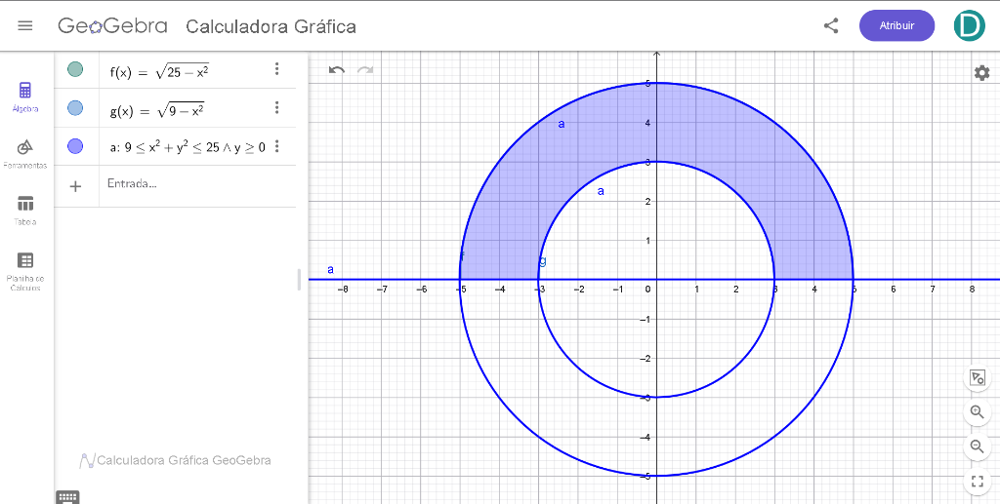
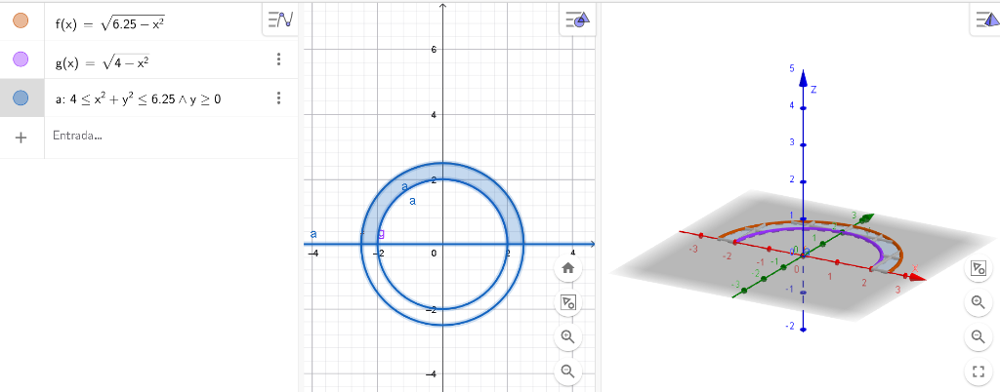
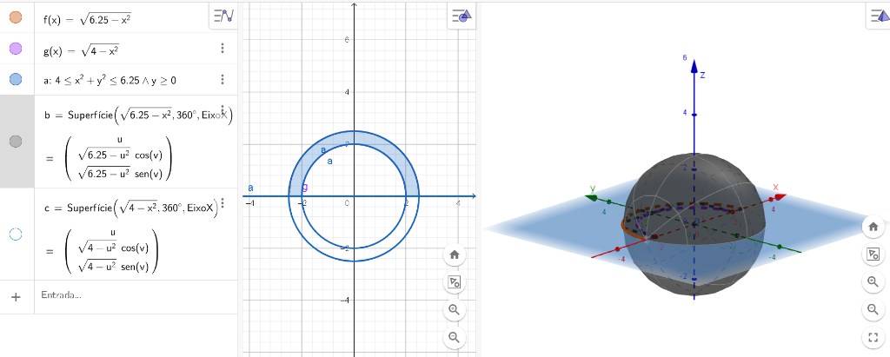
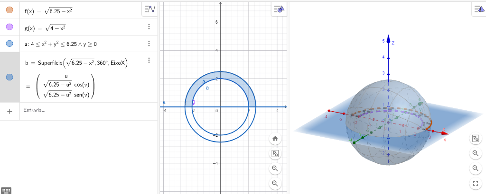

UNIVERSIDADE FEDERAL DE PELOTAS
Instituto de Física e Matemática • CLMD / UAB
Curso de Licenciatura em Matemática a Distância
Casca de Esfera
Região delimitada por duas esferas concêntricas — da definição no $\mathbb{R}^3$ às aplicações em engenharia.
4 Etapas Obrigatórias
Fundamentação Matemática
Esfera e volume, origem de $d_{xy}$ e $d$, por que isolar $y$, região $\mathcal{R}$ e GeoGebra.
Dedução do Volume via Integral
Soma de Riemann, Método dos Discos, primitivas e Teorema Fundamental.
Aplicação Numérica (Geometria Espacial)
Flutuador de aço ($R=10\text{ cm}, e=2\text{ cm}$), unidades SI e interpretação.
Aplicação Inédita & Crítica
Tanque criogênico de $LH_2$ ($-253^\circ\text{C}$), integral do isolamento e limitações.
1. O que é uma Esfera, Semicírculo e Seu Volume?
O que é uma Esfera e Qual o Seu Centro?
- Centro $C$ e Raio $R$: o centro fica exatamente no meio; todo ponto da borda está à mesma distância $R$ dele.
- Semicírculo gerador: metade de cima de um círculo plano de raio $R$ ($y = \sqrt{R^2 - x^2}$); ao girar $360^\circ$, forma a esfera.
- Ponte para a Casca: na esfera o miolo é cheio; depois, retiraremos uma esfera menor ($r$) de dentro da maior ($R$).
Como Calcular o Volume? (Exemplo: $R = 3\text{ cm}$)
- Substituindo $R = 3\text{ cm}$: $V = \frac{4}{3}\pi \cdot 3^3 = \frac{4}{3}\pi \cdot 27$.
- Resultado: $V = 4 \cdot 9 \cdot \pi = 36\pi \approx 113{,}10\text{ cm}^3$.
2. Definição no $\mathbb{R}^3$: De Onde Vêm $d_{xy}$ e $d$?
Casca Esférica: Entre Duas Esferas Concêntricas
- Fronteira Externa ($d = R$): $x^2 + y^2 + z^2 = R^2 \;\; (R = 5)$
- Cavidade Oca Interna ($d = r$): $x^2 + y^2 + z^2 = r^2 \;\; (r = 3)$
Origem de $d_{xy}$ e $d$ (Dois Triângulos de Pitágoras)
- 1. Chão ($d_{xy}$): andamos $x$ e $y$ no plano da base; a diagonal no chão mede $d_{xy}^2 = x^2 + y^2$.
- 2. Altura $z$ ($d$ 3D): da ponta de $d_{xy}$, subimos $z$ em $90^\circ$; logo $d^2 = d_{xy}^2 + z^2 = x^2 + y^2 + z^2$.
- 3. Na casca ($r \le d \le R$): elevando ao quadrado, eliminamos a raiz $d = \sqrt{x^2 + y^2 + z^2}$.
3. Por Que Isolar $y$ (e Não $x$ ou $z$)?
Por Que Isolamos $y$ em Função de $x$?
- Por que não isolar $z$? No desenho plano (2D) ainda não há profundidade ($z=0$); a 3ª dimensão $z$ surge só na rotação.
- Por que isolar $y$ (e não $x$)? Escolhemos o eixo $x$ como eixo do giro; a distância de cada ponto até ele é a altura $y$, que vira o raio do disco!
- E se isolássemos $x$? Só faria sentido se girássemos no eixo vertical $y$. Girando no eixo $x$, precisamos de $y(x)$.
Do Círculo Perfeito à Raiz Positiva ($y \ge 0$)
- Pitágoras no plano 2D: catetos $x, y$ e hipotenusa $R$ dão $x^2 + y^2 = R^2$.
- Isolando $y$: $y^2 = R^2 - x^2 \implies y = \pm\sqrt{R^2 - x^2}$ (aparece a raiz quadrada).
- Só sinal $+$ ($y \ge 0$): a metade superior já varre todo o espaço em $360^\circ$, sem duplicar o volume.
4. Região Geradora $\mathcal{R}$ e Revolução $360^\circ$
Região Geradora $\mathcal{R} \subset \mathbb{R}^2$
- Curva externa ($y = f(x)$): $f(x)=\sqrt{R^2-x^2}$ no intervalo $[-R, R]$ ($[-5, 5]$)
- Curva interna ($y = g(x)$): $g(x)=\sqrt{r^2-x^2}$ no intervalo $[-r, r]$ ($[-3, 3]$)
Lendo o Gráfico e Gerando o Sólido ($R=5, r=3$)
- Faixa entre os arcos: $\mathcal{R}$ é apenas a parede plana azul entre o raio interno $r=3$ e o externo $R=5$.
- Giro de $360^\circ$ no eixo $x$: essa faixa varre o espaço 3D formando a casca maciça com miolo oco de raio $3$.
5. Elementos Constituintes e Simetrias ($R=5\text{ cm},\; r=3\text{ cm}$)
Centro $C(0,0,0)$
Ponto fixo equidistante de cada camada.
Raio Externo ($R$)
Distância à superfície externa ($V_{\text{ext}} = \frac{4}{3}\pi R^3$).
Raio Interno ($r$)
Raio da cavidade vazia ($V_{\text{int}} = \frac{4}{3}\pi r^3$).
Espessura da Parede ($e = R - r$)
Seções planas são arruelas no meio ($|x| < r$) e discos nas pontas ($r \le |x| \le R$).
Simetria Radial e Axial ($O(3)$)
Qualquer plano que passa por $C(0,0,0)$ divide a casca em dois hemisférios iguais.
6. Modelagem no GeoGebra ($R = 5,\; r = 3$)
Região Geradora $\mathcal{R}$ no Plano Cartesiano

Sólido de Revolução ($360^\circ$ no Eixo $x$)

Da Soma de Riemann à Integral Definida
1. Fatiamento em $n$ Discos Elementares
- Partição de $[-R, R]$ em $n$ fatias de largura $\Delta x = \frac{R - (-R)}{n} = \frac{2R}{n}$.
- Volume do cilindro fino ($V_{\text{cil}} = \pi \cdot \text{raio}^2 \cdot h$): $\Delta V_i \approx \pi [y(x_i^*)]^2 \Delta x$.
2. Soma de Riemann e Passagem ao Limite
- Aplicamos essa integral a $f(x)=\sqrt{R^2-x^2}$ (ext.) e $g(x)=\sqrt{r^2-x^2}$ (int.).
Método dos Discos (Arruelas) vs. Cascas
Método Escolhido: Discos / Anéis (Arruelas)
- Fórmulas: Discos $V = \pi\int_a^b [f(x)]^2\,dx$ • Arruelas $V = \pi\int_a^b \left([f(x)]^2 - [g(x)]^2\right)dx$.
- Elimina a raiz: $\pi[y(x)]^2 = \pi(\sqrt{R^2-x^2})^2 = \pi(R^2-x^2)$ (polinômio direto).
- Miolo ($|x| < r$): $A(x) = \pi(R^2-x^2) - \pi(r^2-x^2) = \pi(R^2-r^2)$ (área constante).
Por que NÃO Cascas Cilíndricas?
- Fórmula: $V = 2\pi\int_a^b y \cdot h(y)\,dy \implies 2\pi\int y\sqrt{R^2-y^2}\,dy$ (mantém a raiz).
- Exigiria dividir a região no eixo $y$ em $[0, r]$ (arruelas) e $[r, R]$ (só externa).
Montagem da Integral e Propriedades Operatórias
- 1ª integral ($[-R, R]$): esfera externa maciça gerada por $f(x)=\sqrt{R^2-x^2}$.
- 2ª integral ($[-r, r]$): cavidade oca interna gerada por $g(x)=\sqrt{r^2-x^2}$.
- Cancelamento: $(\sqrt{u})^2 = u$ para $u \ge 0$.
- Propriedades: $\int c\,h(x)\,dx = c\int h(x)\,dx$ e $\int (u-v)\,dx = \int u\,dx - \int v\,dx$.
Antiderivada (Primitiva) dos Termos Polinomiais
Como $x$ é a variável de integração, $R^2$ e $r^2$ são constantes em relação a $x$.
Teorema Fundamental do Cálculo: $\int_{a}^{b} f(x)\,dx = P(b) - P(a)$
Limites $[-R,\; R]$: $\pi\left[P_{\text{ext}}(R) - P_{\text{ext}}(-R)\right]$
Limites $[-r,\; r]$: $\pi\left[P_{\text{int}}(r) - P_{\text{int}}(-r)\right]$
Fórmula Final e Interpretação Geométrica
Subtração de Volumes e Correlação Euclidiana
- Modelo didático ($R=5,\; r=3$): $V = \frac{4}{3}\pi(5^3 - 3^3) = \frac{4}{3}\pi(125 - 27) = \frac{392\pi}{3} \approx 410{,}50$.
Casca Fina ($e = R - r \to 0$) e Derivada
- Substituindo: $V \approx \frac{4}{3}\pi \cdot (3R^2 e) = 4\pi R^2 \cdot e$ ($\text{Área} \times \text{Espessura}$).
- Derivada: $\lim_{e \to 0} \frac{V}{e} = \frac{dV}{dR} = 4\pi R^2$.
Problema Industrial: Flutuador de Aço
Enunciado da Questão
Uma indústria metalúrgica fabrica esferas ocas de aço inoxidável para atuarem como flutuadores mecânicos de nível em caldeiras sob alta pressão. Cada flutuador possui raio externo $R = 10\text{ cm}$ e espessura de parede $e = 2\text{ cm}$. Qual é o volume de aço necessário para fabricar um flutuador, em $\text{cm}^3$ e no Sistema Internacional ($\text{m}^3$)?
Dados, Fórmulas Utilizadas e Raio Interno ($r$)
- Dados: $R = 10\text{ cm}$ e $e = 2\text{ cm}$.
- Fórmula da espessura: $e = R - r \implies r = R - e = 10 - 2 = 8\text{ cm}$.
- Fórmula do volume: $V_{\text{casca}} = \frac{4}{3}\pi (R^3 - r^3)$.
Resolução Passo a Passo e Interpretação
1. Desenvolvimento Passo a Passo em $\text{cm}^3$
2. Conversão para o SI ($\text{m}^3$) e Interpretação
- Interpretação ($1\text{ L} = 1.000\text{ cm}^3$): $\approx 2{,}04\text{ L}$ de aço envolvem a cavidade oca $V_{\text{int}} = \frac{4}{3}\pi(8^3) = \frac{2048\pi}{3}\text{ cm}^3 \approx 2{,}14\text{ L}$.
Tanque Criogênico de Hidrogênio ($LH_2$)
Enunciado da Questão (Problema Inédito)
Na engenharia aeroespacial, o hidrogênio líquido ($LH_2$) é mantido a $-253^\circ\text{C}$ ($20\text{ K}$). Pela menor razão área/volume ($A/V = 3/R$), projeta-se um tanque esférico de parede dupla: vaso interno de raio $r = 2{,}0\text{ m}$ e blindagem externa de raio $R = 2{,}5\text{ m}$, com o espaço intermediário preenchido por perlita expandida ($\rho = 120\text{ kg/m}^3$). Calcule, pelo Cálculo Integral, o volume ($V$) e a massa ($M$) de isolante.
Dados e Fórmulas do Modelo
- Parâmetros: $r = 2{,}0\text{ m}$, $R = 2{,}5\text{ m}$, $e = R - r = 0{,}5\text{ m}$ e $\rho = 120\text{ kg/m}^3$.
- Volume (Integral): $V = \pi\int_{-R}^{R}(R^2-x^2)\,dx - \pi\int_{-r}^{r}(r^2-x^2)\,dx$.
- Massa do isolante: $M = V \times \rho$.
Tanque Criogênico: Curvas 2D e Seção $180^\circ$
Curvas Geradoras ($R=2{,}5\text{ m},\; r=2{,}0\text{ m}$)

Região Anelar e Meia-Revolução

Tanque Criogênico: Parametrização 3D e Transparência
Superfícies Paramétricas ($u \in [-R,R],\; v \in [0, 2\pi]$)

Cavidade Criogênica ($r=2{,}0\text{ m}$) e Parede ($0{,}5\text{ m}$)

Volume da Casca de Perlita via Integral Definida
Desenvolvimento pelo Cálculo Integral ($R=2{,}5\text{ m},\; r=2{,}0\text{ m}$)
Desenvolvimento Numérico do Volume e da Massa
Viabilidade Prática e Limitações do Modelo
1. Viabilidade Físico-Estrutural
- Carga estrutural: $\approx 3{,}83\text{ t}$ de perlita exigem apoios reforçados.
- Choque térmico: variação de $+30^\circ\text{C}$ para $-253^\circ\text{C}$ gera contração diferencial.
2. Limitações do Modelo Contínuo
- A integral assume casca contínua e sem aberturas.
- Tubos de carga, válvulas e sensores perfuram a parede, reduzindo levemente o volume real.
Considerações Finais
Da intuição geométrica no $\mathbb{R}^3$ ao rigor da Integral Definida e à engenharia real.
Rigor Analítico
Soma de Riemann $\to$ Integral Definida $\to$ Teorema Fundamental do Cálculo.
Fórmula Validada
$V = \frac{4}{3}\pi(R^3-r^3)$ aplicada em flutuador industrial e tanque criogênico.
Olhar Crítico
Interpretação física de unidades SI e limites do modelo contínuo ideal.